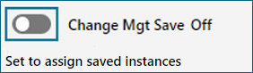

Zuweisen von Modellierungsobjekt-Instanzen zu einem Paket in der Modellierung
Sie können Modellierungsobjekt-Instanzen erstellen und aktualisieren und diese vorhandenen, aktiven Paketen in der Modellierung hinzufügen. Benutzer mit der entsprechenden Rolle und den entsprechenden Berechtigungen können ein Standardpaket für die Änderungsverwaltung auswählen und dann alle in einer Sitzung erstellten oder aktualisierten Instanzen diesem Paket hinzufügen.
Die Option "Änderungsmanagement-Speicherung" wird auf der Seite "Modellierung" angezeigt, wenn Sie eine Lizenz für die Änderungsverwaltung besitzen, mindestens ein Paket definiert ist und Sie eine Rolle mit der Berechtigung "Änderungspaket-Modellierungsabfrage" haben. Sie können Modellierungsobjekt-Instanzen zu einem Paket in der Modellierung hinzufügen, wenn die folgenden Bedingungen erfüllt sind:
| • | Sie müssen über Modellierungsberechtigungen verfügen. |
| • | Sie müssen über die Berechtigung "Änderungspaketinhalt zuweisen" verfügen. |
| • | Sie müssen über die Berechtigung "Änderungspaket-Modellierungsabfrage" verfügen. |
| • | Sie müssen der Paketeigentümer sein oder die Eigentümerrolle haben (z. B. die von Siemens bereitgestellte Paketeigentümer-Rolle), oder Sie müssen für das Paket als Inhaltsprojektmitarbeiter zugeordnet sein. |
| • | Das Paket muss sich in einem Schritt befinden, der das Zuweisen von Inhalten zum Paket zulässt. Dies kann z. B. Entwurfsschritt sein. |
Die Option "Änderungsmanagement-Speicherung" ist standardmäßig deaktiviert. Sie können wie gewohnt in der Modellierung arbeiten – ohne Integration der Änderungsverwaltung.
Legen Sie die Option "Änderungsmanagement-Speicherung" auf "Ein" fest, wenn Sie Modellierungsobjekt-Instanzen einem Paket in der Modellierung zuweisen möchten.
Eine Sitzung endet, wenn Sie die Registerkarte "Modellierung" schließen oder die Anwendung verlassen. Die Option "Änderungsmanagement-Speicherung" wird deaktiviert. Sie müssen die Option auf "Ein" festlegen, wenn Sie die Seite das nächste Mal laden, falls Sie diese Funktion wieder verwenden möchten.
Wenn Sie eine zweite Registerkarte "Modellierung" öffnen, wird eine weitere Sitzung hergestellt.
| Hinweis: | Sie müssen Modellierungsobjekte in der richtigen Reihenfolge zuweisen oder Referenzen hinzufügen, wenn die Option "Änderungsmanagement-Speicherung" aktiviert auf "Ein" festgelegt ist. Informationen zum Zuweisen von Modellierungsobjekt-Instanzen und Referenzen zu Paketen finden Sie unter "Zuweisen und Überprüfen des Paketinhalts". Weitere Informationen zur Seite "Modellierung" und zum Erstellen sowie Aktualisieren von Modellierungsobjektinstanzen finden Sie im Opcenter Execution Medical Device and Diagnostics Modeling-Benutzerhandbuch oder im Opcenter Execution Core Modeling-Benutzerhandbuch. |
Beim Speichern können Sie die einzelne Instanz jeweils einem Paket zuweisen, wenn Sie kein Standardpaket auswählen.
Beim Festlegen eines Standardpakets
Legen Sie die Option "Änderungsmanagement-Speicherung" auf "Ein" fest und wählen Sie ein Standardpaket aus, wenn Sie dem Paket alle Modellierungsobjekt-Instanzen zuweisen möchten, die Sie während der Sitzung erstellt oder aktualisiert haben.
Im Popup "Standardpaket setzen" können Sie nur ein Paket auswählen. Wählen Sie das Paket aus und klicken Sie dann auf die Schaltfläche "Standard setzen", um Ihre Auswahl zu treffen.
Wenn Sie kein Standardpaket festlegen
Wenn Sie die Option "Änderungsmanagement-Speicherung" auf "Ein" festlegen, aber kein Standardpaket auswählen, wird das Popup "Paketzuordnungen verwalten" jedes Mal angezeigt, wenn Sie eine Instanz speichern. Sie können die Instanzen dann einzeln einem Paket zuweisen.
Das Popup "Paketzuordnungen verwalten" enthält drei Registerkarten:
| • | Zugeordnete Pakete |
Die Registerkarte "Zugeordnete Pakete" listet alle aktiven Pakete auf, denen die Instanz entweder explizit oder durch Abhängigkeit zugeordnet ist. Alle Pakete außer denen, die geleert oder geschlossen sind, werden unabhängig von Ihrer Rolle angezeigt.
| Hinweis: | Dies ist die Standardregisterkarte, wenn Sie das Popup "Paketzuordnungen verwalten" über die Schaltfläche "Paketzuordn." auf dem Werkzeugbalken der Seite "Modellierung" aufrufen. |
| • | Aus Paket entfernen |
Die Registerkarte "Aus Paket entfernen" listet alle aktiven Pakete auf, die die Rollen- und Schrittkriterien erfüllen, die der Instanz zugeordnet sind. Sie können die Instanz aus mehreren Paketen entfernen. Sie können nur explizit hinzugefügte Instanzen entfernen. Sie können keine Abhängigkeiten entfernen.
| Hinweis: | Über diese Registerkarte können Sie eine Instanz aus einem oder mehreren Paketen entfernen, selbst wenn die Instanz mit einem Standardpaket zugewiesen wurde. |
| • | Zum Paket hinzufügen |
Die Registerkarte "Zu Paket hinzufügen" listet alle aktiven Pakete auf, die die Rollen- und Schrittkriterien erfüllen. Die Anwendung listet keine bereits hinzugefügten Pakete auf. Dies ist die Standard-Registerkarte. Sie können immer nur ein Paket auswählen.
Die Option "Änderungsmanagement-Speicherung" wird auf der Seite "Modellierung" angezeigt, wenn Sie eine Lizenz für die Änderungsverwaltung besitzen und mindestens ein Paket erstellt haben.
Diese Abbildung zeigt ein Beispiel an, bei dem die Option "Änderungsmanagement-Speicherung" deaktiviert ist.

Diese Abbildung zeigt ein Beispiel an, bei dem die Option "Änderungsmanagement-Speicherung" aktiviert ist.
Diese Abbildung zeigt ein Beispiel an, bei dem die Option "Änderungsmanagement-Speicherung" aktiviert und ein Standardpaket festgelegt ist.

Diese Tabelle definiert die Steuerelemente für die Option "Änderungsmanagement-Speicherung".
|
Control |
Klicken Sie auf dieses Steuerelement, um . . . |
|---|---|
|
Aus |
Legen Sie die Option "Änderungsmanagement-Speicherung" auf "Ein" fest. Die Anwendung legt das Steuerelement auf die Position "Ein" fest und zeigt die Verknüpfung "Standard setzen" an. |
|
Ein |
Legen Sie die Option "Änderungsmanagement-Speicherung" auf "Aus" fest. Die Anwendung legt das Steuerelement auf die Position "Aus" fest und ersetzt die Verknüpfung "Standard setzen" durch den Tipp "Zum Zuweisen gespeicherter Instanzen aktivieren". |
|
Standard setzen |
Zeigt das Popup "Standardpaket setzen" an. Nachdem Sie ein Standardpaket ausgewählt haben, wird der Paketname neben der Verknüpfung "Standard setzen" angezeigt. |
Diese Tabelle definiert die Felder im Popup "Standard setzen".
|
Feld |
Definition |
Typ |
|---|---|---|
|
Paketname |
Name des Änderungsverwaltungspakets, dem Sie die Instanz zuweisen möchten. |
Nur Anzeige |
|
Beschreibung |
Kurze Beschreibung des Änderungsverwaltungspakets, wenn eine solche bei der Erstellung oder Aktualisierung des Pakets eingegeben wurde. |
Nur Anzeige |
|
Eigentümer |
Eigentümer des Pakets. |
Nur Anzeige |
Diese Tabelle definiert die Felder im Popup "Paketzuordnungen verwalten".
|
Feld |
Definition |
Typ |
|---|---|---|
|
Registerkarte "Zugeordnete Pakete" |
||
|
Paketname |
Name des einzelnen Änderungsverwaltungspakets, das der Instanz zugeordnet ist. |
Nur Anzeige |
|
Paketschritt |
Der aktuelle Schritt des Pakets im Arbeitsplan. |
Nur Anzeige |
|
Eigentümer |
Eigentümer des Pakets. |
Nur Anzeige |
|
Zu Paket hinzugefügt |
Datum und Uhrzeit, zu denen die Instanz zum Paket hinzugefügt wurde. |
Nur Anzeige |
|
Ist Abhängigkeit |
Gibt an, ob die Instanz dem Paket über eine Abhängigkeit zugeordnet wurde. |
Nur Anzeige |
|
Registerkarte "Aus Paket entfernen" |
||
|
[Kontrollkästchen] |
Kontrollkästchen, mit denen Sie die Pakete auswählen können, aus denen Sie die Instanz entfernen möchten. Sie können die Kontrollkästchen für einzelne Pakete aktivieren. |
Optional |
|
Paketname |
Name des Änderungsverwaltungspakets, das der Instanz zugeordnet ist. |
Nur Anzeige |
|
Paketschritt |
Der aktuelle Schritt des Pakets im Arbeitsplan. |
Nur Anzeige |
|
Eigentümer |
Eigentümer des Pakets. |
Nur Anzeige |
|
Zu Paket hinzugefügt |
Datum und Uhrzeit, zu denen die Instanz zum Paket hinzugefügt wurde. |
Nur Anzeige |
|
Registerkarte "Zu Paket hinzufügen" |
||
|
Paketname |
Name des Änderungsverwaltungspakets, dem Sie die Instanz hinzufügen möchten. |
Nur Anzeige |
|
Beschreibung |
Kurze Beschreibung des Änderungsverwaltungspakets, wenn eine solche bei der Erstellung oder Aktualisierung des Pakets eingegeben wurde. |
Nur Anzeige |
|
Eigentümer |
Eigentümer des Pakets. |
Nur Anzeige |
Diese Tabelle definiert die Schaltflächen auf den einzelnen Registerkarten im Popup "Paketzuordnungen verwalten".
|
Schaltfläche |
Funktion der Schaltfläche . . . |
|---|---|
|
Schließen |
Schließt das Popup "Paketzuordnungen verwalten". |
|
Entfernen |
Entfernt die Instanz aus den ausgewählten Paketen. |
|
Hinzufügen |
Fügt die Instanz zu dem ausgewählten Paket hinzu. |
Vorgehensweise zum Zuweisen einer Modellierungsobjekt-Instanz zu einem Standardpaket in der Modellierung
Gehen Sie folgendermaßen vor, um eine Modellierungsobjekt-Instanz einem Standardpaket in der Modellierung zuzuweisen:
| 1. | Wählen Sie Modellierung im Menü Modellierung aus. Die Seite "Modellierung" wird angezeigt. |
| 2. | Klicken Sie auf Aus, um die Option Änderungsmanagement-Speicherung auf Ein festzulegen. Die Verknüpfung "Standard setzen" wird angezeigt. |
| 3. | Klicken Sie auf die Verknüpfung Standard setzen. Das Popup "Standardpaket setzen" wird angezeigt. |
| 4. | Wählen Sie das Paket aus, das Sie als Standardpaket festlegen möchten. |
| 5. | Klicken Sie auf Standard setzen. Das Popup "Standardpaket setzen" wird geschlossen. |
| 6. | Klicken Sie auf der Seite "Modellierung" auf den Pfeil Alle Wartung, um eine Liste der Modellierungsobjekte in dieser Gruppe anzuzeigen. |
Oder
Wählen Sie auf der Seite "Modellierung" in der Liste Objekte anzeigen die Option Alle anzeigen (alphabetisch) aus, um eine Liste von Modellierungsobjekten in alphabetischer Reihenfolge anzuzeigen. Eine Liste aller Modellierungsobjekte wird in alphabetischer Reihenfolge angezeigt.
| 7. | Wählen Sie ein Modellierungsobjekt aus. Die Seite des Objekts wird auf der Seite "Modellierung" angezeigt. |
| 8. | Erstellen Sie eine neue Modellierungsobjekt-Instanz oder aktualisieren Sie eine vorhandene Instanz. |
| 9. | Klicken Sie auf Speichern. Die Anwendung speichert das Modellierungsobjekt und zeigt eine Erfolgsmeldung an. Sie weist die Modellierungsobjekt-Instanz dem Standardpaket zu. |
| 10. | Wiederholen Sie die Schritte 7 bis 9 für jede weitere Modellierungsobjekt-Instanz, die Sie dem Standardpaket während der Sitzung hinzufügen möchten. |
Vorgehensweise zum Hinzufügen einer Modellierungsobjekt-Instanz zu einem Paket in der Modellierung ohne Festlegen eines Standards
Gehen Sie folgendermaßen vor, um eine Modellierungsobjekt-Instanz zu einem Paket in der Modellierung hinzuzufügen, ohne ein Standardpaket festzulegen:
| 1. | Wählen Sie Modellierung im Menü Modellierung aus. Die Seite "Modellierung" wird angezeigt. |
| 2. | Klicken Sie auf Aus, um die Option Änderungsmanagement-Speicherung auf Ein festzulegen. Die Verknüpfung "Standard setzen" wird angezeigt. |
| 3. | Klicken Sie auf der Seite "Modellierung" auf den Pfeil Alle Wartung, um eine Liste der Modellierungsobjekte in dieser Gruppe anzuzeigen. |
Oder
Wählen Sie auf der Seite "Modellierung" in der Liste Objekte anzeigen die Option Alle anzeigen (alphabetisch) aus, um eine Liste von Modellierungsobjekten in alphabetischer Reihenfolge anzuzeigen. Eine Liste aller Modellierungsobjekte wird in alphabetischer Reihenfolge angezeigt.
| 4. | Wählen Sie ein Modellierungsobjekt aus. Die Seite des Objekts wird auf der Seite "Modellierung" angezeigt. |
| 5. | Erstellen Sie eine neue Modellierungsobjekt-Instanz oder aktualisieren Sie eine vorhandene Instanz. |
| 6. | Klicken Sie auf Speichern. Die Anwendung speichert das Modellierungsobjekt und zeigt eine Erfolgsmeldung an. Das Popup "Paketzuordnungen verwalten" mit ausgewählter Registerkarte "Zu Paket hinzufügen" wird angezeigt. |
| 7. | Wählen Sie das Paket aus, dem Sie die Instanz hinzufügen möchten. |
| 8. | Klicken Sie auf Hinzufügen. Die Anwendung fügt die Modellierungsobjekt-Instanz dem Paket hinzu, zeigt eine Erfolgsmeldung an und schließt das Popup "Paketzuordnungen verwalten". |
Vorgehensweise zum Entfernen einer Instanz aus einem Paket in der Modellierung
Gehen Sie folgendermaßen vor, um eine Instanz aus einem Paket in der Modellierung zu entfernen:
| 1. | Wählen Sie Modellierung im Menü Modellierung aus. Die Seite "Modellierung" wird angezeigt. |
| 2. | Klicken Sie auf Aus, um die Option Änderungsmanagement-Speicherung auf Ein festzulegen. Die Verknüpfung "Standard setzen" wird angezeigt. |
| 3. | Klicken Sie auf der Seite "Modellierung" auf den Pfeil Alle Wartung, um eine Liste der Modellierungsobjekte in dieser Gruppe anzuzeigen. |
Oder
Wählen Sie auf der Seite "Modellierung" in der Liste Objekte anzeigen die Option Alle anzeigen (alphabetisch) aus, um eine Liste von Modellierungsobjekten in alphabetischer Reihenfolge anzuzeigen. Eine Liste aller Modellierungsobjekte wird in alphabetischer Reihenfolge angezeigt.
| 4. | Wählen Sie das Modellierungsobjekt aus, das die Instanz enthält, aus der Sie die Paketzuordnungen entfernen möchten. Die Seite des Objekts wird auf der Seite "Modellierung" angezeigt. |
| 5. | Wählen Sie die Instanz aus, aus der Sie die Paketzuordnungen entfernen möchten. Die Felder für die Instanz werden angezeigt. |
| 6. | Klicken Sie auf Speichern. Die Anwendung zeigt eine Erfolgsmeldung an, die angibt, dass das Modellierungsobjekt aktualisiert wurde. Das Popup "Paketzuordnungen verwalten" mit ausgewählter Registerkarte "Zu Paket hinzufügen" wird angezeigt. |
| 7. | Klicken Sie auf die Registerkarte Aus Paket entfernen. |
| 8. | Wählen Sie die Pakete aus, aus denen Sie die Instanz entfernen möchten. |
| Hinweis: | Sie können nur explizit hinzugefügte Instanzen entfernen, keine Abhängigkeiten. |
| 9. | Klicken Sie auf Entfernen. Die Anwendung entfernt die Modellierungsobjekt-Instanz aus den ausgewählten Paketen, zeigt eine Erfolgsmeldung an und schließt das Popup "Paketzuordnungen verwalten". |
Vorgehensweise zum Anzeigen von Paketen, die einer Instanz in der Modellierung zugeordnet sind
Gehen Sie folgendermaßen vor, um Pakete anzuzeigen, die einer Instanz in der Modellierung zugeordnet sind:
| 1. | Wählen Sie Modellierung im Menü Modellierung aus. Die Seite "Modellierung" wird angezeigt. |
| 2. | Klicken Sie auf Aus, um die Option Änderungsmanagement-Speicherung auf Ein festzulegen. Die Verknüpfung "Standard setzen" wird angezeigt. |
| 3. | Klicken Sie auf der Seite "Modellierung" auf den Pfeil Alle Wartung, um eine Liste der Modellierungsobjekte in dieser Gruppe anzuzeigen. |
Oder
Wählen Sie auf der Seite "Modellierung" in der Liste Objekte anzeigen die Option Alle anzeigen (alphabetisch) aus, um eine Liste von Modellierungsobjekten in alphabetischer Reihenfolge anzuzeigen. Eine Liste aller Modellierungsobjekte wird in alphabetischer Reihenfolge angezeigt.
| 4. | Wählen Sie das Modellierungsobjekt aus, das die Instanz enthält, für die Sie Paketzuordnungen anzeigen möchten. Die Seite des Objekts wird auf der Seite "Modellierung" angezeigt. |
| 5. | Wählen Sie die Instanz aus, für die Sie Paketzuordnungen anzeigen lassen möchten. Die Felder für die Instanz werden angezeigt. |
| 6. | Klicken Sie auf Speichern. Die Anwendung zeigt eine Erfolgsmeldung an, die angibt, dass das Modellierungsobjekt aktualisiert wurde. Das Popup "Paketzuordnungen verwalten" mit ausgewählter Registerkarte "Zu Paket hinzufügen" wird angezeigt. |
| 7. | Klicken Sie auf die Registerkarte Zugeordnete Pakete. |
| 8. | Zeigen Sie die Liste der Pakete an, die der Instanz zugeordnet sind. |
| 9. | Klicken Sie auf Schließen. Die Anwendung schließt das Popup "Paketzuordnungen verwalten". |